ダミーのログイン画面の作成を通じて、アプリ全体に関わる処理に関する知識を学びます。
iPhone | iPad |
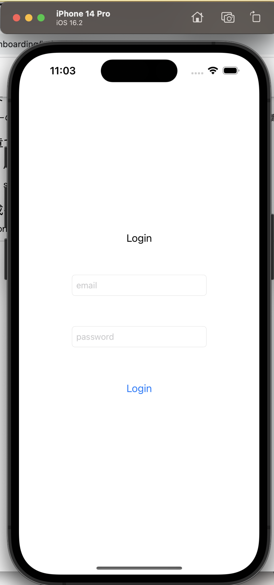 | 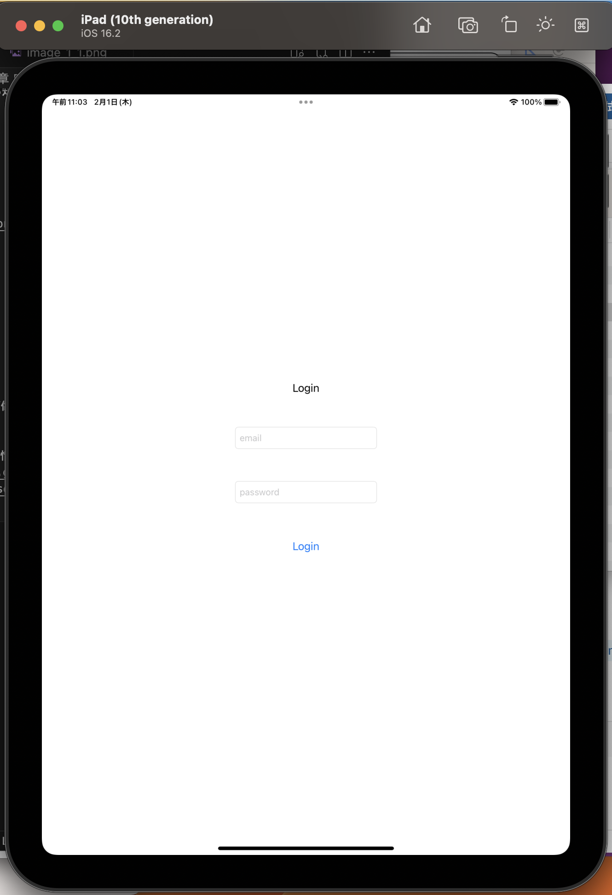 |
Xcodeのプロジェクトを作る
GitHubのリポジトリを作る
以上でGitHubとの連携は完了です。
画面表示のための下準備
Information Property List内にあるApplication Scene Manifestをマイナスボタンで削除する。func application(_ application: UIApplication, configurationForConnecting connectingSceneSession: UISceneSession, options: UIScene.ConnectionOptions) -> UISceneConfiguration {
// Called when a new scene session is being created.
// Use this method to select a configuration to create the new scene with.
return UISceneConfiguration(name: "Default Configuration", sessionRole: connectingSceneSession.role)
}
func application(_ application: UIApplication, didDiscardSceneSessions sceneSessions: Set<UISceneSession>) {
// Called when the user discards a scene session.
// If any sessions were discarded while the application was not running, this will be called shortly after application:didFinishLaunchingWithOptions.
// Use this method to release any resources that were specific to the discarded scenes, as they will not return.
}
var window: UIWindow?
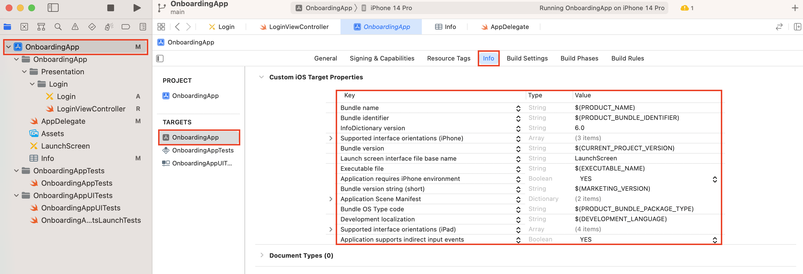
func application(_ application: UIApplication, didFinishLaunchingWithOptions launchOptions: [UIApplication.LaunchOptionsKey: Any]?) -> Bool 内にwindow = UIWindow(frame: UIScreen.main.bounds)
let storyBoard = UIStoryboard(name: "Login", bundle: nil)
let loginVC = storyBoard.instantiateViewController(withIdentifier: "LoginViewController")
window?.rootViewController = loginVC
window?.makeKeyAndVisible()
を追加します。※このままでは動きません。 次に、ログイン画面を作っていきます。
ログイン画面の表示
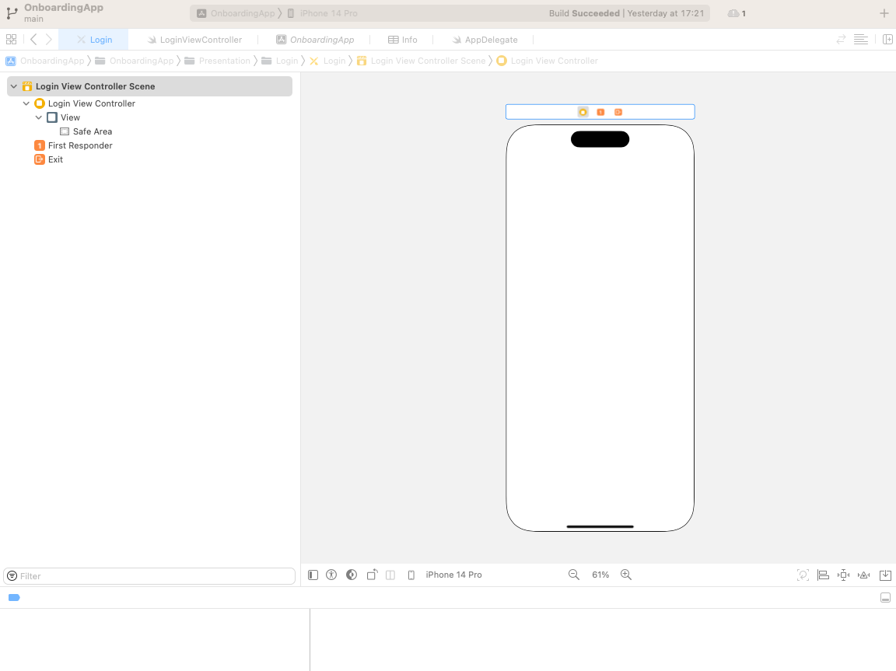
LoginViewControllerにする。import foundationを削除したのちに以下のコードを記述し、LoginViewControllerクラスを作成する。import UIKit
final class LoginViewController: UIViewController {}
LoginViewControllerを入力。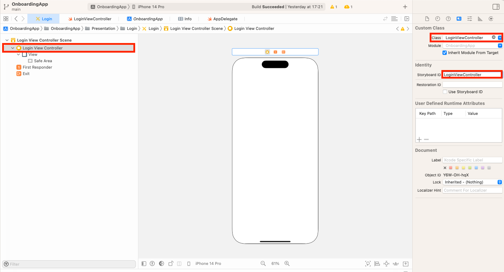
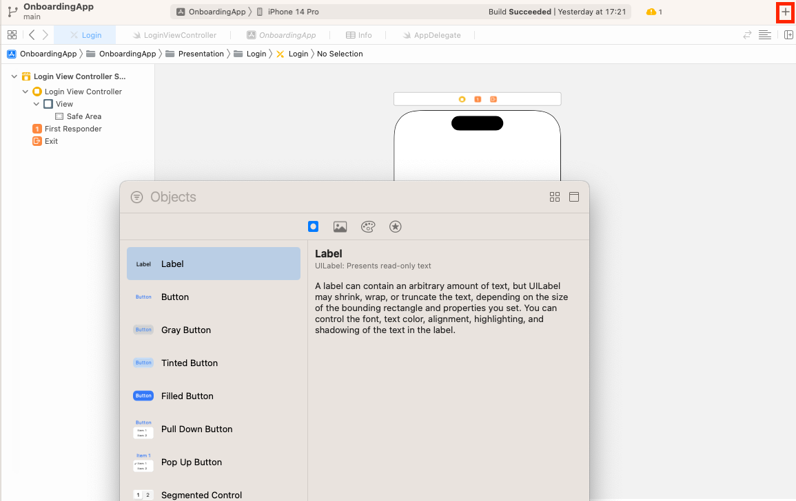
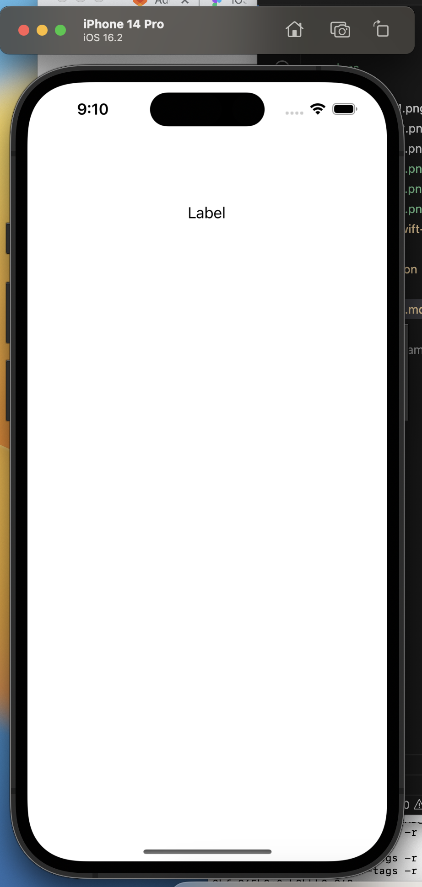
ログイン画面の作成
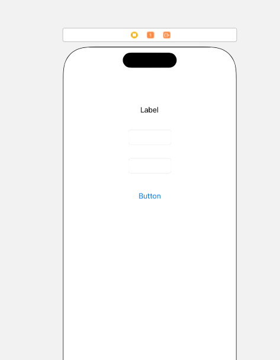
Insert Outlet or Outlet Collectionと出てくる。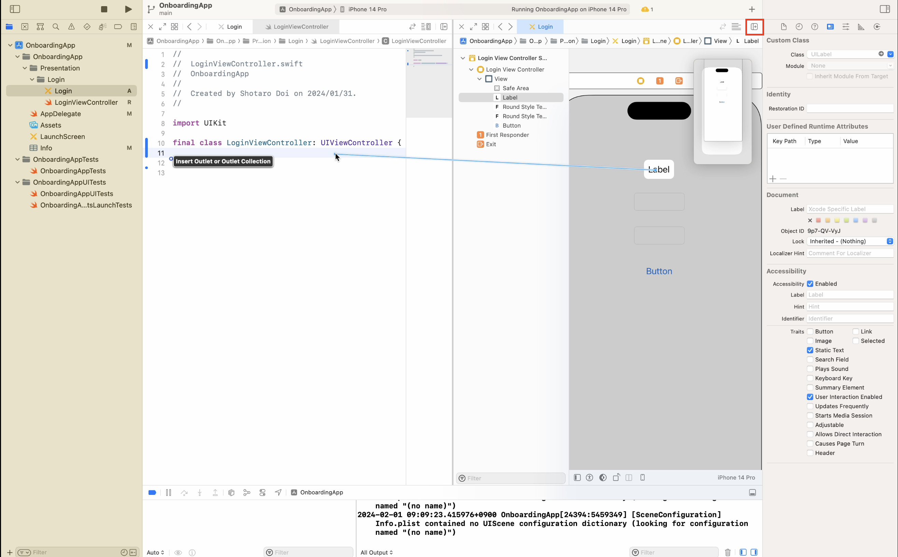
このタイミングでクリックを離し、StorageをStrongにし、nameをtitleLabelにすると、自動的に
@IBOutlet var titleLabel: UILabel!
というコードが出現する。しかしこのインスタンスはクラス内からしか参照しないため、@IBOutletとvarの間にprivateを記述することでそれを明示する。 4. 同様に、上から順にprivateの@IBOutletプロパティであるemailField, passwordField, loginButtonを作成すると、LoginViewController.swiftは以下のようなコードになる。
import UIKit
final class LoginViewController: UIViewController {
@IBOutlet private var titleLabel: UILabel!
@IBOutlet private var emailField: UITextField!
@IBOutlet private var passwordField: UITextField!
@IBOutlet private var loginButton: UIButton!
}
titleLabel: UILabel!のすぐ横から以下のコードを記述する。@IBOutlet private var titleLabel: UILabel! {
didSet {
titleLabel.text = "Login"
}
}
didSet内に下記を記述する。// emailField内
emailField.placeholder = "email"
// passwordField内
passwordField.placeholder = "password"
// loginButton内
loginButton.setTitle("Login",
for: .normal)
各パーツの位置調整
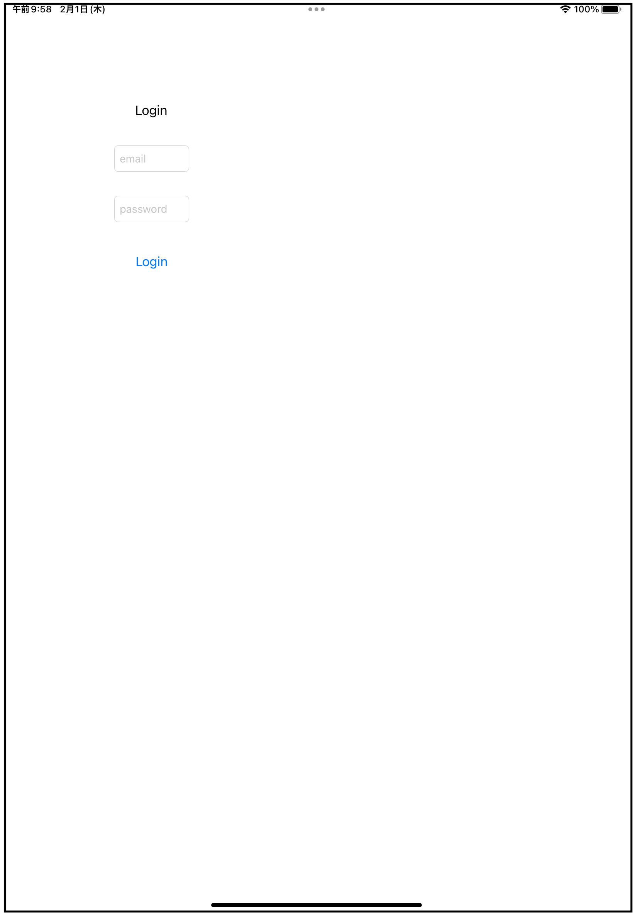
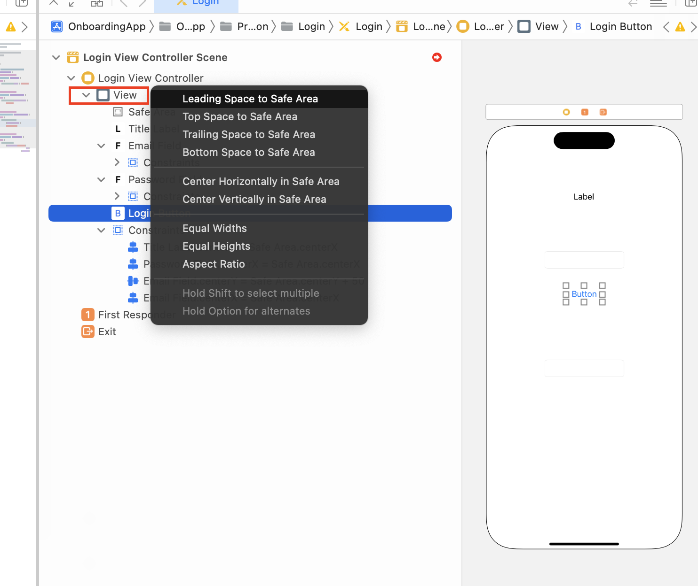
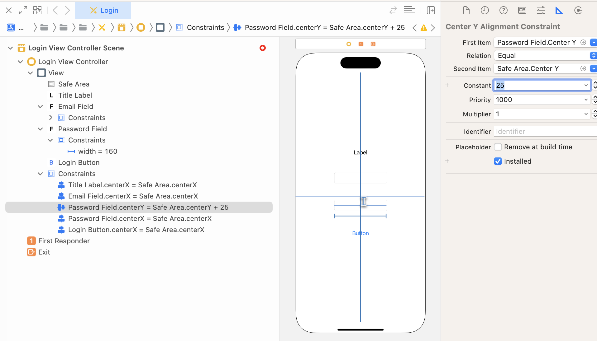
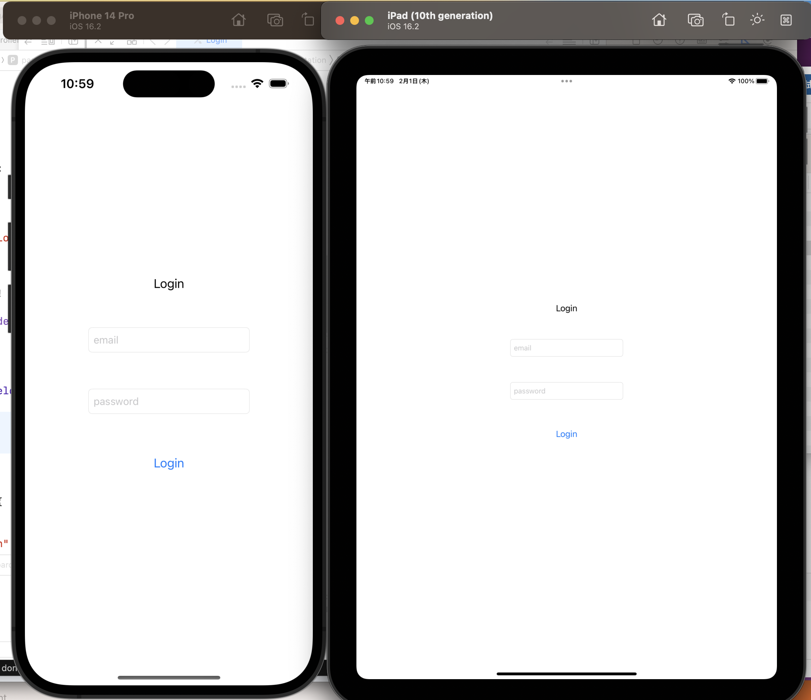
AppDelegate.swift
didFinishLaunchingWithOptions, applicationWillTerminate だけでなく、画面に関わるライフサイクルイベントもSceneDelegate同様、処理できる。SceneDelegate.swift